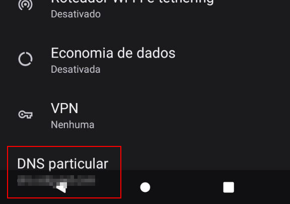
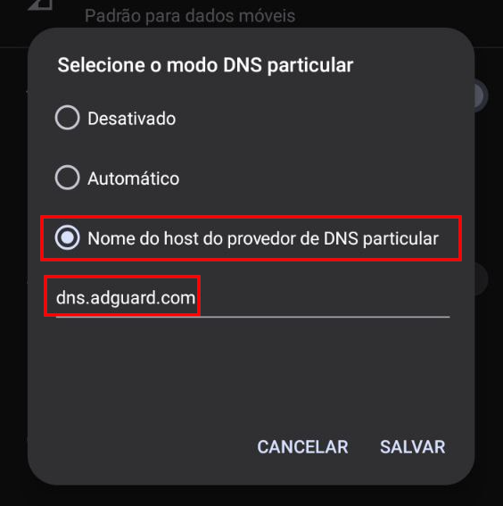

Navegue mais rápido e sem distrações configurando o AdGuard DNS no seu dispositivo
⚠️ LEMBRANDO QUE VOCÊ ESTARÁ TROCANDO SEU DNS!
Abra suas configurações e vá até Rede e internet
E aqui fica a mágica! simplesmente em DNS particular você vai deixar dessa forma:
E dai você pode escolher algum desses:
Bloqueio padrão
dns.adguard.com
Sem bloqueio de conteúdo, apenas sem anúncios
unfiltered.adguard-dns.com
ESCRITOR POBRE, SEM POSSIBILIDADE DE TER UM IPHONE PARA TIRAR PRINT!
Vá em Ajustes → Wi-Fi.
Toque no ícone ℹ️ da rede conectada.
Role até Configurar DNS → Manual.
Adicione os servidores:
Primário:
94.140.14.14
Secundário:
94.140.15.15
> WINDOWS
Abra Painel de Controle → Rede e Internet → Central de Rede e Compartilhamento.
Clique em Alterar as configurações do adaptador.
Clique com o botão direito na sua conexão → Propriedades.
Selecione Protocolo IP Versão 4 (TCP/IPv4) → Propriedades.
Marque Usar os seguintes endereços de servidor DNS e insira:
94.140.14.14
94.140.15.15
Confirme e reinicie a conexão.
> macOS
Vá em Preferências do Sistema → Rede.
Selecione sua conexão ativa → Avançado.
Na aba DNS, clique em ➕ e adicione
94.140.14.14
94.140.15.15
Clique em OK → Aplicar.
> Linux (Ubuntu/Debian)
Abra Configurações → Rede.
Selecione sua conexão → Configurações IPv4.
Em DNS, insira:
94.140.14.14, 94.140.15.15
Salve e reinicie a rede.
Conclusão
Com o AdGuard DNS configurado, você terá uma navegação mais limpa, rápida e segura em todos os seus dispositivos. É uma solução simples e eficaz para quem quer se livrar dos anúncios sem precisar instalar aplicativos extras.